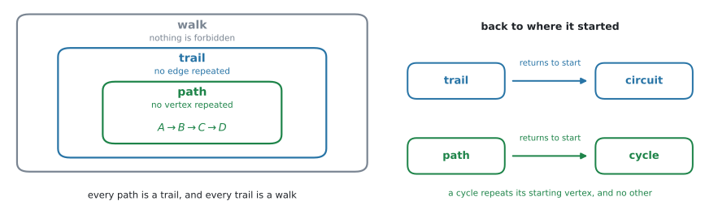
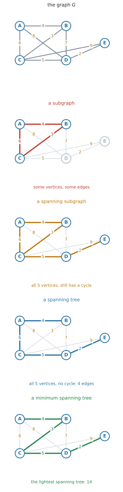
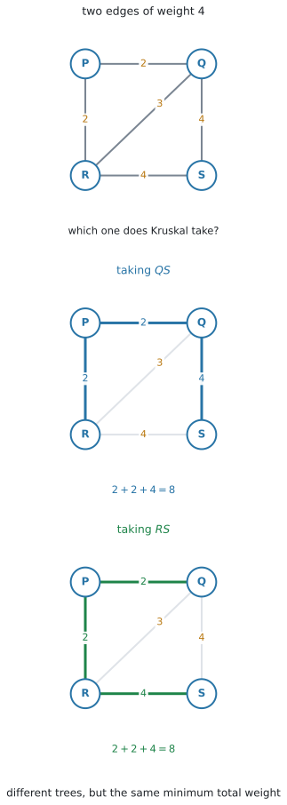
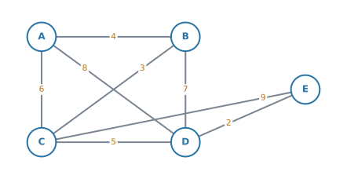
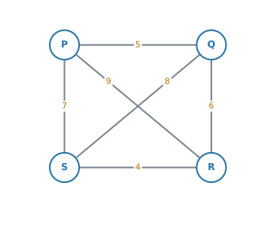

AHL 3.16 — Tree and cycle algorithms（木と閉路のアルゴリズム）
- walk、trail（小道）、path（道）、circuit（回路）、cycle（閉路）を区別できる。
- odd vertex の個数から、Eulerian trail / circuit があるかを判定できる。Hamiltonian path / cycle との違いを言える。
- minimum spanning tree（最小全域木）を Kruskal と Prim で求められる。Prim は表の上でも実行できる。
- Chinese postman problem（中国人郵便配達問題）を、odd vertex が \(4\) 個までのグラフで解ける。なぜその方法でよいかを説明できる。
- travelling salesman problem（巡回セールスマン問題）で、nearest neighbour による上界と、deleted vertex による下界を求められる。
- 現実の道路網を、table of least distances（最短距離の表）で complete graph（完全グラフ）に直せる。
AHL 3.15 の第6節で、walk —— edge をたどった道 —— を入れました。同じ vertex も同じ edge も、何度通ってもよい、いちばんゆるいたどり方でした。
このページでは、まず その walk を分類します。 「edge を繰り返さない」「vertex を繰り返さない」「出発点にもどる」という制限を付けて、名前を分けます。
そのうえで、graph の上の道を選ぶ問題を \(3\) つ扱います。
| 問題 | 何を全部通るか | 何を最小にするか |
|---|---|---|
| minimum spanning tree | vertex を全部つなぐ | つないだ edge の weight の合計 |
| Chinese postman | edge を全部通る | 歩く距離の合計 |
| travelling salesman | vertex を全部通る | 回る距離の合計 |
edge の話か、vertex の話か。 最初にそこを見分けるだけで、使う道具が決まります。\(3\) つの見分け方は、最後の節にまとめてあります。
algorithm（アルゴリズム）とは、迷わずに最後まで実行できる手順のことです。この項目で覚えるのは、公式ではなく手順です。
| algorithm | 何のため | 出てくるもの |
|---|---|---|
| Eulerian の判定 | edge を全部 \(1\) 回ずつ通れるか | あるか・ないか |
| Kruskal / Prim | 全部つなぐ最小の weight | 正確な値 |
| Chinese postman | edge を全部通る最短 | 正確な値 |
| nearest neighbour | vertex を全部回る道を \(1\) つ作る | upper bound（上界） |
| deleted vertex | 回る距離がこれを下回れないという値 | lower bound（下界） |
最後の列がいちばん大事です。 「正確な値が出るのか、上からの押さえなのか、下からの押さえなのか」を取りちがえると、答え方そのものが変わります。
（この項目にも公式集の欄はありません。手順の理由は、そのつど書きます。）
シラバスは、この項目を Tree and cycle algorithms with undirected graphs と書いています。この項目に出てくる graph は、矢印のない無向グラフ（undirected graph）です。
The idea
1. walk、trail、path、circuit、cycle
AHL 3.15 の walk に、制限を付けていきます。

| 英語 | 日本語 | 決まり |
|---|---|---|
| walk | 歩道 | 何を繰り返してもよい |
| trail | 小道 | edge を繰り返さない |
| path | 道 | vertex を繰り返さない |
| circuit | 回路 | 出発点にもどる trail |
| cycle | 閉路 | 出発点にもどる path |
図 1 の左が、walk・trail・path の \(3\) つの関係です。path は必ず trail であり、trail は必ず walk です。逆は言えません。
vertex を繰り返さなければ、同じ edge を \(2\) 度通ることもできません（\(2\) 度目に通るには、その edge の端にもう \(1\) 度立たなければならないからです）。ですから path は自動的に trail になります。

図 2 の \(2\) 番目は、\(C\) を \(2\) 度通っています。だから path ではありません。しかし、同じ edge を \(2\) 度は通っていないので trail です。
出発点にもどると、名前が変わります
図 1 の右です。trail が出発点にもどれば circuit、path が出発点にもどれば cycle です。
\(A \to B \to C \to A\) は cycle です。\(A\) が \(2\) 度出てきますが、それは出発点と終点として \(1\) 度ずつであって、途中で \(A\) を通り直しているわけではありません。
「出発点と終点以外の vertex は、\(1\) 度ずつしか通らない」——これが cycle の条件です。
\(A \to B \to C \to B \to A\) は、途中で \(B\) を \(2\) 度通っているので cycle ではありません（edge も繰り返しているので circuit でもありません）。
- 同じ edge を \(2\) 度通ったか。 通っていれば walk 止まりです。
- 出発点と終点を除いて、同じ vertex を \(2\) 度通ったか。 通っていれば trail 止まりで、path ではありません。
そして、出発点にもどっていれば、trail は circuit に、path は cycle になります。
State whether ... is a walk, a trail, or a path と問われたら、あてはまるいちばん強い言い方を答えます。path は walk でもありますが、walk と書いても点にはなりません。
2. この項目でずっと使うグラフ
以下、この重み付きグラフ \(G\) を使います。

vertex は \(5\) 個、edge は \(8\) 本、weight の合計は \(44\) です。degree は次のようになります。
\[ \deg A = 3, \quad \deg B = 3, \quad \deg C = 4, \quad \deg D = 4, \quad \deg E = 2 \]
合計は \(16 = 2 \times 8\) で、AHL 3.14 の関係と合っています。
odd vertex（次数が奇数の頂点）は \(A\) と \(B\) の \(2\) 個です。この \(2\) 個という数字が、あとで何度も効いてきます。
3. Eulerian trail と Eulerian circuit
全部の edge を、ちょうど \(1\) 回ずつ通るたどり方を考えます。
- Eulerian trail（オイラー小道）… 全部の edge を \(1\) 回ずつ通る trail
- Eulerian circuit（オイラー回路）… それが出発点にもどるもの
「一筆書き」のことです。グラフがつながってさえいれば、あるかないかは odd vertex を数えるだけで分かります。

| odd vertex の個数 | 結論 |
|---|---|
| \(0\) 個 | Eulerian circuit がある（どこから始めてもよい） |
| \(2\) 個 | Eulerian trail がある。ただし、その \(2\) 個の一方から出発して、もう一方で終わる |
| それ以外 | どちらもない |
この判定表は、グラフが connected であることを前提にしています。
たとえば、離れた三角形が \(2\) つあるグラフは degree が全部 \(2\)（odd vertex は \(0\) 個）ですが、片方からもう片方へ行けないので、Eulerian circuit はありません。まず、ひとつながりかどうかを見てください。
AHL 3.14 の Why it works で見たとおり、odd vertex の個数は必ず偶数です。
\(0\)、\(2\)、\(4\)、\(6\)、… しかありません。判定表に「\(1\) 個のとき」が無いのは、そのためです。
図 3 の \(G\) では odd vertex が \(A\)、\(B\) の \(2\) 個なので、Eulerian trail はあり、Eulerian circuit はありません。しかも、その trail は \(A\) から始めて \(B\) で終わる（またはその逆）と決まっています。
4. Hamiltonian path と Hamiltonian cycle
こんどは vertex の話です。
- Hamiltonian path（ハミルトン道）… 全部の vertex を、ちょうど \(1\) 回ずつ通る path
- Hamiltonian cycle（ハミルトン閉路）… それが出発点にもどるもの

図 5 は \(A \to B \to C \to E \to D \to A\) で、\(5\) 個の vertex を \(1\) 回ずつ通ってもどっています。使わなかった edge があってもかまいません。Hamiltonian は edge を全部使う必要がないからです。
| 全部通るもの | 判定 | |
|---|---|---|
| Eulerian | edge | odd vertex を数えれば決まる |
| Hamiltonian | vertex | 数えるだけでは決まらない |
Eulerian は odd vertex を数えるだけで決まりました。Hamiltonian には、それにあたる簡単な条件がありません。
「degree が全部これ以上なら必ずある」という十分条件はいくつか知られていますが、どれもこのコースの範囲外です。「あるとき、そしてそのときにかぎり」と言える簡単な条件は、この課程では扱いません。
ですから問われるのは、たいてい具体的に \(1\) つ見つけて書くことです。見つけたら、\(A \to B \to C \to E \to D \to A\) のように順番を書いてください。
（ないことを示すのは、ずっと難しくなります。試験で問われるとすれば、ある vertex に edge が \(1\) 本しか付いていないなど、その vertex を通り抜けられないことが目で見て分かる場合です。）
Euler は \(18\) 世紀のスイスの数学者で、ケーニヒスベルクの \(7\) つの橋を一筆書きできるかという問題を、この odd vertex の考え方で解きました。Hamilton は \(19\) 世紀のアイルランドの数学者で、正十二面体の頂点をめぐるパズルを作りました。
5. subgraph、spanning subgraph、spanning tree、MST
言葉が \(4\) つ並ぶので、図で見分けてください。

| 言葉 | 条件 |
|---|---|
| subgraph（部分グラフ） | もとの graph から vertex と edge を選んだもの（AHL 3.14） |
| spanning subgraph（全域部分グラフ） | subgraph のうち、vertex を全部含むもの。cycle があってもよい |
| spanning tree（全域木） | spanning subgraph のうち、tree であるもの（connected で cycle なし） |
| minimum spanning tree（MST） | spanning tree のうち、weight の合計が最小のもの |
\(1\) つずつ条件が増えていきます。vertex を全部入れる → 輪をなくす → いちばん軽くする、という順です。
vertex が \(n\) 個なら、spanning tree の edge は必ず \(n-1\) 本です（AHL 3.14）。
\(5\) つの町を、ケーブルで全部つなぎたい。ただし、ケーブルの総延長を最小にしたい。
このとき「全部つながる」が spanning、「余分な輪を作らない」が tree、「総延長最小」が minimum です。cycle があったら、そのうち \(1\) 本を切っても全部つながったままなので、必ず無駄になります。
- 通るもの … vertex を全部つなぐ（回るのではありません）
- 最小にするもの … 選んだ edge の weight の合計
- 出てくるもの … 正確な最小値。上界でも下界でもありません
MST の求め方は \(2\) つあります。どちらを使っても、weight の合計は必ず同じになります。
6. Kruskal’s algorithm
軽い edge から順に、cycle ができないかぎり採る。 手順はこの \(1\) 行です。
- すべての edge を、weight の小さい順に並べる。
- 上から順に見て、cycle ができないなら採る。できるなら捨てる。
- edge が \(n-1\) 本になったら終わり。
\(G\) でやってみます。edge を軽い順に並べると \(2, 3, 4, 5, 6, 7, 8, 9\) です。

| 順 | edge | weight | 採否 |
|---|---|---|---|
| \(1\) | \(DE\) | \(2\) | 採る |
| \(2\) | \(BC\) | \(3\) | 採る |
| \(3\) | \(AB\) | \(4\) | 採る |
| \(4\) | \(CD\) | \(5\) | 採る（これで \(4\) 本） |
| — | \(AC\) | \(6\) | 見る前に終了 |
\[ \text{MST} = 2 + 3 + 4 + 5 = 14 \]
vertex が \(5\) 個なので edge は \(4\) 本。\(4\) 本になった時点で止めます。
図 7 の step 1 と step 2 を見てください。選ばれた \(DE\) と \(BC\) は、離れています。
Kruskal は「つながっているか」を気にしません。気にするのは cycle ができないかだけです。最後にひとつながりになります。
同じ weight が並んだとき
軽い順に並べる途中で、同じ weight の edge が \(2\) 本以上出てくることがあります。

図 8 では、\(QS\) と \(RS\) がどちらも \(4\) です。\(PQ = 2\) と \(PR = 2\) を採ったあと、\(QR = 3\) は cycle を作るので捨て、次に \(4\) の \(2\) 本を見ます。
- \(QS\) を採ると、\(\{PQ,\ PR,\ QS\}\)
- \(RS\) を採ると、\(\{PQ,\ PR,\ RS\}\)
\(2\) つは違う tree です。 どちらも \(3\) 本で、全部の vertex をつないでいて、cycle がありません。そして合計は
\[ 2 + 2 + 4 = 8 \]
で、どちらも同じです。
同じ weight が並んだら、どちらを先に採っても構いません。 出てくる tree が違っても、それは間違いではありません。
変わらないのは、weight の合計です。 Find the minimum total weight と問われているのなら、どちらの道を通っても同じ答えになります。
State the edges と問われているときは、自分が採ったほうを書けば正解です。ただし、同点があったことと、どちらを選んだかを書いておくと、採点者に伝わります。
\[ \text{採った edge：} PQ\ (2),\ PR\ (2),\ QS\ (4) \quad (QS \text{ と } RS \text{ はどちらも } 4) \]
7. Prim’s algorithm
Prim は、\(1\) 点から育てていくやり方です。
- どこか \(1\) つの vertex から始める。
- いま木に入っている vertex と、まだ入っていない vertex を結ぶ edge の中から、いちばん軽いものを採る。
- vertex が全部入るまで繰り返す。
\(A\) から始めます。

| 順 | 木の中 | 候補 | 採る edge |
|---|---|---|---|
| \(1\) | \(A\) | \(AB=4\), \(AC=6\), \(AD=8\) | \(AB=4\) |
| \(2\) | \(A,B\) | \(AC=6\), \(AD=8\), \(BC=3\), \(BD=7\) | \(BC=3\) |
| \(3\) | \(A,B,C\) | \(AD=8\), \(BD=7\), \(CD=5\), \(CE=9\) | \(CD=5\) |
| \(4\) | \(A,B,C,D\) | \(CE=9\), \(DE=2\) | \(DE=2\) |
\[ \text{MST} = 4 + 3 + 5 + 2 = 14 \]
Kruskal と同じ \(14\) です。選んだ edge の集合も、この \(G\) では同じでした。
\(B\) から始めても、\(E\) から始めても、合計は \(14\) です。途中で採る順番は変わりますが、最後の合計は変わりません。
「\(A\) から始めよ」と指定されたら、途中の順番も採点されます。指定された vertex から始めてください。
Prim でも、候補の中に同じ weight が \(2\) つ以上あることがあります（第6節）。そのときは、どちらを採っても構いません。 合計は変わりません。
- 図が与えられていて、weight が読み取りやすい → Kruskal（並べ替えるだけ）
- 表・行列で与えられている、または vertex が多い → Prim（並べ替えなくてよい）
問題文が starting at A のように出発点を指定していれば Prim、in order of weight のように重み順を指定していれば Kruskal です。
Use Kruskal's algorithm と書かれているのに Prim で解くと、答えが合っていても方法点が落ちます。
そして、どちらの場合も edge を採った順番を書いてください。State the edges in the order in which they are added は、そのままの意味です。合計だけでは、指定された手順を実行したことが示せません。
8. Prim を行列の上で走らせます
シラバスには、はっきりこう書かれています。
Use of matrix method for Prim’s algorithm
つまり、表の形で出された問題を、図に描き直さずにそのまま解くやり方です。シラバスが名指ししている解き方なので、必ず練習してください。
この項目の graph は無向なので（AHL 3.15）、weight の表は対角線をはさんで対称になります。\(AB\) の欄と \(BA\) の欄には、同じ数が入っています。
行列法は、その対称性を前提にしています。\(1\) 本の edge が表の \(2\) か所に現れるので、行を見ても列を見ても同じ edge が見つかる——それが、この手順が動く理由です。
表が対称でなかったら、それは有向グラフの表です。この項目の algorithm は、そこには使えません。

- 出発する vertex の列を消す（もう「入る先」ではないから）。
- 木に入っている vertex の行を全部見て、消していない列の中でいちばん小さい数に丸をつける。
- その数の列の vertexが木に入る。その列を消す。
- 全部の vertex が入るまで、\(2\) と \(3\) を繰り返す。
図 10 では、\(A\) 行から \(4\)（\(B\) 列）、次に \(A\) 行と \(B\) 行を見て \(3\)（\(C\) 列）、次に \(A,B,C\) 行を見て \(5\)（\(D\) 列）、最後に \(2\)（\(E\) 列）と丸がついています。
\[ 4 + 3 + 5 + 2 = 14 \]
行を消してしまうと、その vertex から出る edge が見えなくなります。木に入った vertex は、これから外へ伸ばすために使うので、行は残しておかなければなりません。
列を消す \(=\) もうその vertex に入る必要はない、という意味です。
9. Chinese postman problem
the shortest route around a weighted graph with up to four odd vertices, going along each edge at least once
- 通るもの … edge を全部、最低 \(1\) 回ずつ。繰り返してよい
- 最小にするもの … 歩く距離の合計。出発点にもどる
- 出てくるもの … 正確な最小値
郵便配達員が全部の道を配って局にもどる、という場面から来ています。
odd vertex が \(0\) 個なら、Eulerian circuit があるので、答えは weight の合計そのものです。何も繰り返さずにすみます（グラフがつながっている場合です）。
問題になるのは、odd vertex がある場合です。
odd vertex が \(2\) 個のとき
\(G\) では \(A\) と \(B\) が odd でした。

- odd vertex を見つける（ここでは \(A\) と \(B\)）。
- その \(2\) 点のあいだの最短の道（least distance）を探す。
- その道の分だけ、もう \(1\) 度通る（repeat する）。
- 答えは、weight の合計 \(+\) その最短の道の長さ。
\(A\) と \(B\) を結ぶ道を全部調べます。同じ vertex を \(2\) 度通らない道は、\(7\) 通りあります。
| 道 | 重みの合計 |
|---|---|
| \(A \to B\) | \(4\) |
| \(A \to C \to B\) | \(6 + 3 = 9\) |
| \(A \to D \to B\) | \(8 + 7 = 15\) |
| \(A \to D \to C \to B\) | \(8 + 5 + 3 = 16\) |
| \(A \to C \to D \to B\) | \(6 + 5 + 7 = 18\) |
| \(A \to D \to E \to C \to B\) | \(8 + 2 + 9 + 3 = 22\) |
| \(A \to C \to E \to D \to B\) | \(6 + 9 + 2 + 7 = 24\) |
いちばん短いのは、直接の \(AB = 4\) です。
\(1\) 点も経由しない道、\(1\) 点だけ経由する道、\(2\) 点経由する道……と、経由する vertex の数の順に書き出すと、落としにくくなります。
上の表は、\(A \to B\)（経由なし）、\(ACB\) と \(ADB\)（\(1\) 点）、\(ADCB\) と \(ACDB\)（\(2\) 点）、\(ADECB\) と \(ACEDB\)（\(3\) 点）の順です。
\[ 44 + 4 = 48 \]
odd vertex が \(4\) 個のとき
手順が \(1\) 段増えます。\(4\) 個を \(2\) 個ずつのペアに分ける方法が \(3\) 通りあるので、その \(3\) 通りを比べます。
- odd vertex を \(4\) 個見つける。\(W\)、\(X\)、\(Y\)、\(Z\) とする。
- \(6\) 組すべてについて、\(2\) 点間の least distance を求める。 \[ WX,\quad WY,\quad WZ,\quad XY,\quad XZ,\quad YZ \]
- ペアの作り方 \(3\) 通りについて、\(2\) つの least distance の和を出す。 \[ \{WX,\ YZ\}, \qquad \{WY,\ XZ\}, \qquad \{WZ,\ XY\} \]
- いちばん小さい和を、weight の合計に足す。
いちばん小さいものだけを書くと、それが最小である理由が示せません。 \(3\) 通りとも計算して並べたところまでが解答です。
ペアの作り方が \(3\) 通りなのは、\(W\) の相手を \(X\)、\(Y\)、\(Z\) のどれにするかで \(3\) 通りあり、相手が決まれば残りの \(2\) 個も自動的に決まるからです。
なお、odd vertex が \(6\) 個になるとペアの作り方は \(15\) 通りになります。シラバスが up to four odd vertices と限っているのは、この範囲までということです。
least distance を、直接の edge で済ませない
\(2\) つの odd vertex が直接つながっていても、他の点を経由したほうが短いことがあります。 また、直接つながっていないこともあります。
odd vertex を \(P\) と \(R\) とすると、\(PR = 10\) でも \(P \to Q \to R\) が \(3 + 4 = 7\) なら、使うのは \(7\) です。\(6\) 組すべてについて、経由路も比べてください。
やり方は 例 5 と演習 \(9\) で見ます。
10. travelling salesman problem
the Hamiltonian cycle of least weight in a weighted complete graph
- 通るもの … vertex を全部、ちょうど \(1\) 回ずつ（\(=\) Hamiltonian cycle）
- 最小にするもの … 回る距離の合計
- 出てくるもの … 正確な値は出しません。 上界と下界ではさみます
Chinese postman との違いを、並べておきます。
| 通るもの | 何回 | |
|---|---|---|
| Chinese postman | edge を全部 | 最低 \(1\) 回（繰り返してよい） |
| travelling salesman | vertex を全部 | ちょうど \(1\) 回 |
Chinese postman は、手順どおりにやれば必ず最短が出ます。
travelling salesman は違います。調べるべき cycle の数は
\[ \frac{(n-1)!}{2} \tag{1}\]
通りあり、\(n\) が少し増えるだけで手に負えなくなります。\(5\) 点で \(12\) 通り、\(6\) 点で \(60\) 通り、\(8\) 点になると \(2520\) 通りです。
だから、最短そのものは求めず、「これ以下」と「これ以上」ではさむのがこの項目のやり方です。上から押さえるのが nearest neighbour、下から押さえるのが deleted vertex です。
\(1\). undirected な complete graph であること。どの \(2\) 点も結ばれていて、向きがないこと。
\(2\). 出発点を \(1\) つに固定すること。\((n-1)!\) の \(-1\) は、ここから来ています。残り \(n-1\) 個を並べる順が \((n-1)!\) 通りです。
\(3\). 逆回りを同じものと数えること。\(P \to Q \to R \to S \to P\) と \(P \to S \to R \to Q \to P\) は、通る edge がまったく同じで、長さも同じです。だから \(2\) で割ります。
検算。 \(4\) 点なら \(\dfrac{3!}{2} = 3\) 通り。実際、\(P\) を出発点に固定すると \(PQRS\)、\(PQSR\)、\(PRQS\) の \(3\) 通りしかありません（残りの \(3\) 通りは、この \(3\) つの逆回りです）。
11. table of least distances
Practical problems should be converted to the classical problem by completion of a table of least distances where necessary
travelling salesman は、complete graph の問題です。ところが現実の道路網は、そうなっていないことがあります。
- \(2\) 点のあいだに、直接の道がない
- 直接の道はあるが、他の点を経由したほうが短い
そこで、「\(2\) 点のあいだの最短距離」を表にして、complete graph に作り直します。

\(L\) と \(N\) は \(12\) の道で直接つながっていますが、\(L \to M \to N\) なら \(5 + 6 = 11\) です。最短は \(11\) なので、表には \(11\) と書きます。
table of least distances の least は、「回り道を含めて、いちばん短い行き方」という意味です。
表の各マスについて、直接行った場合と、他の点を経由した場合を比べてください。短いほうを書きます。
現実の道路網に nearest neighbour をそのままかけることはできません。「\(L\) から \(P\) へ」の距離が表にないと、algorithm が止まってしまうからです。
順番はいつもこうです。
\[ \text{現実の道路網} \ \longrightarrow \ \text{table of least distances} \ \longrightarrow \ \text{nearest neighbour / deleted vertex} \]
はじめから complete graph が与えられていれば、この作業は要りません。表を作る必要があるかどうかを、先に確かめてください。
表の上で出てきた cycle は、「\(L \to N\)」と書いてあっても、現実には \(L \to M \to N\) と通ることになります。
答案では、そこまで書けると丁寧です。
以下、\(4\) つの町 \(P, Q, R, S\) の complete graph（すでに最短距離の表になっているもの）で説明します。

12. nearest neighbour algorithm で、上界を出します
nearest neighbour algorithm（最近傍法）は、その場でいちばん近いところへ進み続けるやり方です。
- 指定された vertex から始める。
- まだ行っていない vertex のうち、いちばん近いところへ行く。
- 全部回ったら、出発点にもどる。
- 通った weight を全部足す。
\(P\) から始めます。\(P\) からは \(PQ = 5\)、\(PS = 7\)、\(PR = 9\) なので、いちばん近い \(Q\) へ。\(Q\) からは \(QR = 6\)、\(QS = 8\) なので \(R\) へ。\(R\) からは、残っているのが \(S\) だけなので \(RS = 4\)。最後に \(S \to P = 7\) でもどります。
\[ P \to Q \to R \to S \to P \]
\[ 5 + 6 + 4 + 7 = 22 \]
これは実際に通れる道なので、最短はこれ以下です。つまり upper bound（上界） が \(22\) と分かりました。
\(5 + 6 + 4 = 15\) で止めてしまうと、それは cycle ではありません。出発点にもどっていないからです。
必ず \(4\) 本（vertex が \(n\) 個なら \(n\) 本）足してください。
nearest neighbour は「その場でいちばん近い方へ」としか見ていないので、出発点によって別の cycle が出ます。
上界は小さいほど良いので、starting at each vertex と指示されたら、全部やっていちばん小さいものを答えます。
同じ距離の候補が \(2\) つ以上あるとき
いま立っている vertex から、まだ行っていない \(2\) つの vertex が、同じ距離ということがあります。
そのときは、どちらを選んでも構いません。 ただし、Kruskal の同点（第6節）とは違って、出てくる上界が変わることがあります。
たとえば \(AB = AC = 3\)、\(BC = 2\)、\(CD = 4\)、\(BD = 9\)、\(AD = 10\) の complete graph を \(A\) から始めると、
| 最初に選ぶ | できる cycle | 合計 |
|---|---|---|
| \(B\) | \(A \to B \to C \to D \to A\) | \(3 + 2 + 4 + 10 = 19\) |
| \(C\) | \(A \to C \to B \to D \to A\) | \(3 + 2 + 9 + 10 = 24\) |
どちらも正しい上界です。 どちらも実際に通れる道だからです。ただし上界は小さいほど良いので、\(19\) のほうが役に立ちます。
同点があったときは、「\(AB\) と \(AC\) はどちらも \(3\)。\(B\) を選んだ」のように書きます。
そうしないと、採点者は「\(C\) を選ぶべきところを間違えた」のか「同点のうち一方を選んだ」のか区別できません。
Find an upper bound と問われているだけなら、\(1\) つ出せば足ります。the best upper bound を聞かれたら、両方やって小さいほうを答えてください。
13. deleted vertex algorithm で、下界を出します
deleted vertex algorithm（頂点削除法）は、vertex を \(1\) つ取り除いて考えるやり方です。
この手順は、消した vertex から他の全部の vertex へ距離があることを前提にしています。「小さいほうから \(2\) 本」を選ぶには、候補がそろっていなければなりません。
また、手順 \(2\) で残ったグラフの MST を出すにも、残りがひとつながりでなければなりません。complete graph なら、どちらの条件も自動的にみたされます。
ですから、現実の道路網に直接かけることはできません。先に table of least distances を作ってください（第11節）。
- vertex を \(1\) つ選んで、その vertex と、そこにつながる edge を全部消す。
- 残ったグラフの MST を求める。
- 消した vertex から出ていた edge のうち、小さいほうから \(2\) 本を足す。
- その合計が lower bound（下界） です。
\(P\) を消します。残るのは \(Q, R, S\) で、\(QR = 6\)、\(QS = 8\)、\(RS = 4\)。この MST は、軽いほうから \(RS = 4\) と \(QR = 6\) で、
\[ \text{MST} = 4 + 6 = 10 \]
\(P\) から出ていた edge は \(PQ = 5\)、\(PS = 7\)、\(PR = 9\)。小さいほうから \(2\) 本は \(5\) と \(7\) です。
\[ 10 + 5 + 7 = 22 \]
最短はこれ以上です。
なぜ、これが下界になるのか
どんな Hamiltonian cycle でも、そこから \(P\) と、\(P\) に付いている \(2\) 本の edge を取り除くと、何が残るかを考えてください。
cycle は輪なので、\(P\) を切り取ると輪がほどけて、\(1\) 本の道になります。 しかも、その道は \(P\) 以外の vertex を全部 \(1\) 回ずつ通っています。これを spanning path（全域道）といいます。
そこで、\(2\) つのことが言えます。
\(1\). spanning path は、\(P\) を除いたグラフの spanning tree です。 道は connected で cycle がないので、tree の条件をみたしています（AHL 3.14）。ですから、その weight は MST 以上です。
\[ (\text{spanning path の weight}) \ \ge \ \text{MST}(\text{$P$ を除いたグラフ}) \]
\(2\). 取り除いた \(2\) 本は、\(P\) に付いている edge です。 ですから、その \(2\) 本の和は、\(P\) に付いている edge のうち小さいほうから \(2\) 本の和以上です。
\[ (\text{取り除いた $2$ 本の和}) \ \ge \ (\text{$P$ の最小 $2$ 本の和}) \]
この \(2\) つを足すと
\[ (\text{cycle 全体の weight}) \ \ge \ \text{MST} + (\text{$P$ の最小 $2$ 本の和}) \]
どの Hamiltonian cycle についても成り立つので、最短のものについても成り立ちます。だから右辺は下界です。
いま、上界も下界も \(22\) になりました。最短を \(L\) とすると
\[ 22 \le L \le 22 \]
なので、\(L = 22\) と確定します。これは強い結論なので、問題に hence や deduce とあれば、ここまで書いてください。
一致しないほうがふつうです。そのときは「\(30 \le L \le 31\)」のように、はさんだ形のまま答えます。
消す vertex を変えると、別の下界が出ます。下界は大きいほど良い（最短をきつくはさめる）ので、by deleting each vertex in turn と指示されたら、全部やっていちばん大きいものを答えます。
nearest neighbour の上界とは、逆向きです。上界は小さいほど良く、下界は大きいほど良い。
14. \(3\) つを見分けます
最後に、第5節・第9節・第10節を並べておきます。問題文を読んで、まずこの表のどれかを決めてください。
| minimum spanning tree | Chinese postman | travelling salesman | |
|---|---|---|---|
| 何を全部 | vertex を全部つなぐ | edge を全部通る | vertex を全部通る |
| 何回 | — | 最低 \(1\) 回（繰り返してよい） | ちょうど \(1\) 回 |
| 出発点にもどるか | もどらない（輪を作らない） | もどる | もどる |
| 最小にするもの | 選んだ edge の weight の合計 | 歩く距離の合計 | 回る距離の合計 |
| 使う手順 | Kruskal / Prim | odd vertex を見つけて、最短の道を繰り返す | nearest neighbour / deleted vertex |
| 出てくるもの | 正確な値 | 正確な値 | upper bound と lower bound |
| 問題文の合図 | connect all, cable, minimum spanning tree |
along every road at least once, postman, inspector |
visit every town once, salesman, tour |
つなぐだけか（MST）。edge を全部通るか（postman）。vertex を全部通るか（salesman）。
問題文に every road（道を全部）とあれば edge、every town（町を全部）とあれば vertex です。そこを読み違えなければ、あとは手順どおりです。
Why it works
シラバスは、Chinese postman について次のように求めています。
Students should be able to explain why the algorithm for constructing the Chinese postman problem works, apply the algorithm and justify their choice of algorithm
「どの algorithm を選んだかの理由を書く」ことも求められています。その見分け方は第14節にまとめてあります。
ここで説明するのは、なぜ「\(2\) 点のあいだの最短の道を、もう \(1\) 度通る」でよいのか、その \(1\) 点です。ただし、その理由は odd vertex の意味から出てくるので、そこから始めます。
なぜ、odd vertex が \(0\) か \(2\) なのか
ある vertex \(v\) を、途中で通り抜ける場面を考えます。入ってくるのに edge を \(1\) 本、出ていくのに edge を \(1\) 本、合わせて \(2\) 本ずつ使います。
\(v\) を \(3\) 回通り抜ければ \(6\) 本、\(5\) 回なら \(10\) 本。通り抜けるかぎり、使う edge の数は必ず偶数です。
Eulerian trail は edge を全部ちょうど \(1\) 回ずつ使うので、\(v\) で使う edge の数は \(\deg v\) そのものです。だから、
- 通り抜けるだけの vertex は、\(\deg\) が偶数でなければならない。
例外は、出発点と終点です。出発点は「出ていく」が \(1\) 本多く、終点は「入ってくる」が \(1\) 本多い。だからこの \(2\) つだけ、奇数になり得ます。
- odd vertex が \(0\) 個 → 出発点と終点が同じ場所になる → circuit
- odd vertex が \(2\) 個 → その \(2\) つが出発点と終点になる → trail
- odd vertex が \(4\) 個以上 → 出発点と終点は \(2\) つしかないので、足りない
なぜ、最短の道を \(1\) 回だけ足すのか
Chinese postman では、出発点にもどらなければなりません。つまり circuit が要ります。ところが odd vertex があると circuit は作れません。
そこで、edge を何本か「もう \(1\) 度通る」ことにします。 ある edge をもう \(1\) 度通ると、その両端の degree が \(1\) ずつ増えます。奇数は偶数に、偶数は奇数に変わります。
\(A\) と \(B\) を結ぶ道に沿って全部の edge を繰り返すと、
- 道の途中にある vertex は、\(2\) 本（入る分と出る分）増えるので、偶数のまま。
- 道の両端の \(A\) と \(B\) は、\(1\) 本ずつ増えるので、奇数から偶数へ。
これで odd vertex が \(0\) 個になり、circuit ができます。余分に歩く距離は、繰り返した道の長さそのものです。
だから、\(A\) と \(B\) を結ぶ最短の道を選べば、余分に歩く距離が最小になります。これが、あの手順の意味です。
odd vertex が \(4\) 個のときも、同じ理屈です
odd vertex が \(W\)、\(X\)、\(Y\)、\(Z\) の \(4\) 個あるとき、\(1\) 本の道を繰り返しても、偶数に直せるのはその両端の \(2\) つだけです。残りの \(2\) つは奇数のまま残ります。
ですから、\(2\) 本の道が要ります。 \(4\) 個を \(2\) つの組に分け、それぞれの組を結ぶ道を繰り返す——それが第9節の手順です。
分け方は \(3\) 通りしかないので、\(3\) 通りとも計算して、合計が最小のものを採ることができます。
Repeating a path changes the parity of the degree at its two ends only.
So repeating the shortest path between the two odd vertices makes every degree even, at the least possible extra cost.
日本語で理解しておいて、答案には英語で \(2\) 行書けば十分です。
Worked examples
問題文は英語です。意味が理解できなかったら、問題文の下の「日本語訳」を開いてください。解説は日本語です。
例題 1 The graph \(G\) has vertices \(A\), \(B\), \(C\), \(D\), \(E\) and the edges shown below.

(a) Write down the degree of each vertex.
(b) Determine whether \(G\) has an Eulerian circuit, an Eulerian trail, or neither. Justify your answer.
(c) State a possible starting vertex for an Eulerian trail.
日本語訳
グラフ \(G\) は、頂点 \(A\)、\(B\)、\(C\)、\(D\)、\(E\) と、上に示された辺をもちます。
(a) 各頂点の次数を書きなさい。
(b) \(G\) に Eulerian circuit があるか、Eulerian trail があるか、どちらもないかを判定しなさい。理由も書きなさい。
(c) Eulerian trail の出発点になりうる頂点を \(1\) つ述べなさい。
(a) それぞれの vertex に付いている edge を数えます。
\[ \deg A = 3, \quad \deg B = 3, \quad \deg C = 4, \quad \deg D = 4, \quad \deg E = 2 \]
検算。 合計は \(3+3+4+4+2 = 16\)。edge は \(8\) 本なので \(2 \times 8 = 16\) ✓
(b) odd vertex を数えます。奇数なのは \(A\) と \(B\) の \(2\) 個です。
\(2\) 個なので、Eulerian trail はあり、Eulerian circuit はありません。
試験ではこう書く
\(G\) is connected and has exactly two vertices of odd degree, \(A\) and \(B\). So \(G\) has an Eulerian trail but no Eulerian circuit.
（つながっていて、次数が奇数の頂点がちょうど \(2\) 個あるから、という意味です。connected にも一言ふれておくと確実です。）
(c) trail は odd vertex から始まるので、\(A\) または \(B\) です。
(a) \(\deg A = 3\), \(\deg B = 3\), \(\deg C = 4\), \(\deg D = 4\), \(\deg E = 2\)
(b) \(G\) is connected and has exactly two vertices of odd degree (\(A\) and \(B\)), so \(G\) has an Eulerian trail but no Eulerian circuit.
(c) \(A\) (or \(B\)).
例題 2 Use Kruskal’s algorithm to find a minimum spanning tree for the graph below. State the edges in the order in which they are added, and give the total weight.
日本語訳
上のグラフについて、Kruskal のアルゴリズムを使って最小全域木を \(1\) つ求めなさい。加えた順に辺を述べ、重みの合計も書きなさい。
weight の小さい順に見ていきます。
| edge | weight | 判断 |
|---|---|---|
| \(DE\) | \(2\) | 採る |
| \(BC\) | \(3\) | 採る |
| \(AB\) | \(4\) | 採る |
| \(CD\) | \(5\) | 採る。これで \(4\) 本 |
vertex が \(5\) 個なので、edge は \(5 - 1 = 4\) 本で終わりです。
\[ 2 + 3 + 4 + 5 = 14 \]
検算。 cycle ができていないか確かめます。\(DE\)、\(BC\)、\(AB\)、\(CD\) をつなぐと \(A - B - C - D - E\) の一本道で、輪はありません ✓
この \(G\) には同じ weight の edge がないので、MST は \(1\) つに決まります（第6節）。
Edges added in order: \(DE\) \((2)\), \(BC\) \((3)\), \(AB\) \((4)\), \(CD\) \((5)\).
\[ \text{Total weight} = 2 + 3 + 4 + 5 = 14 \]
in the order と書かれたら、順番まで書きます
合計の \(14\) だけでは、聞かれたことに答えたことになりません。\(2, 3, 4, 5\) の順に採ったことを見せてください。
Use Kruskal's algorithm と指定されているので、重み順に見ていったことが分かる書き方にします（第7節）。
例題 3 The table shows the weights of the edges of an undirected graph.
| \(A\) | \(B\) | \(C\) | \(D\) | \(E\) | |
|---|---|---|---|---|---|
| \(A\) | – | \(4\) | \(6\) | \(8\) | – |
| \(B\) | \(4\) | – | \(3\) | \(7\) | – |
| \(C\) | \(6\) | \(3\) | – | \(5\) | \(9\) |
| \(D\) | \(8\) | \(7\) | \(5\) | – | \(2\) |
| \(E\) | – | – | \(9\) | \(2\) | – |
Use Prim’s algorithm, starting at \(A\), to find a minimum spanning tree. State the edges in the order in which they are added.
日本語訳
表は、ある無向グラフの辺の重みを示しています。
\(A\) から始めて Prim のアルゴリズムを使い、最小全域木を求めなさい。加えた順に辺を述べなさい。
まず、表が対称になっているかを見ます。\(AB\) の欄も \(BA\) の欄も \(4\)、\(CE\) も \(EC\) も \(9\)。対称です ✓ 無向グラフの表なので、行列法が使えます。
\(A\) の列を消して始めます。
手順 \(1\)。 \(A\) の行を見ます。消していない列で最小は \(4\)（\(B\) 列）。\(AB\) を採り、\(B\) 列を消す。
手順 \(2\)。 \(A\) と \(B\) の行を見ます。残っている列は \(C\)、\(D\)、\(E\)。数は \(6, 8\)（\(A\) 行）と \(3, 7\)（\(B\) 行）。最小は \(3\)（\(C\) 列）。\(BC\) を採り、\(C\) 列を消す。
手順 \(3\)。 \(A\)、\(B\)、\(C\) の行を見ます。残るのは \(D\)、\(E\) 列。数は \(8, 7, 5\) と \(9\)。最小は \(5\)（\(D\) 列）。\(CD\) を採り、\(D\) 列を消す。
手順 \(4\)。 残るのは \(E\) 列だけ。数は \(9\)（\(C\) 行）と \(2\)（\(D\) 行）。最小は \(2\)。\(DE\) を採る。
\[ 4 + 3 + 5 + 2 = 14 \]
検算。 edge は \(4\) 本 \(= 5 - 1\) ✓ Kruskal（例 2）と同じ \(14\) ✓
Edges added in order: \(AB\) \((4)\), \(BC\) \((3)\), \(CD\) \((5)\), \(DE\) \((2)\).
\[ \text{Total weight} = 4 + 3 + 5 + 2 = 14 \]
表のまま、列を消しながら進められます。図に描き直すと、写しまちがえる分だけ危険です。
表のどのマスに丸をつけ、どの列を消したかが分かるように、答案にも表を写して印を残してください。
例題 4 A postman must walk along every road in the network below at least once, starting and finishing at \(A\). The weights are distances in kilometres.
(a) Explain why the postman must walk along at least one road twice.
(b) Find the length of the shortest such route.
日本語訳
郵便配達員が、上のネットワークのすべての道を最低 \(1\) 回は歩き、\(A\) で出発して \(A\) で終わらなければなりません。重みは距離（km）です。
(a) 配達員が、少なくとも \(1\) 本の道を \(2\) 回歩かなければならない理由を説明しなさい。
(b) そのような最短の経路の長さを求めなさい。
every road とあるので、edge を全部通る問題です。Chinese postman です（表 12）。
(a) odd vertex が \(A\) と \(B\) の \(2\) 個あります。Eulerian circuit があるのは odd vertex が \(0\) 個のときだけ（第3節）なので、全部の道を \(1\) 回ずつでもどることはできません。
(b) odd vertex が \(2\) 個なので、第9節の手順です。\(A\) と \(B\) を結ぶ道を、表のとおり全部調べます。
\[ 4, \quad 9, \quad 15, \quad 16, \quad 18, \quad 22, \quad 24 \]
最短は、直接の \(AB = 4\) です。weight の合計 \(44\) に足します。
\[ 44 + 4 = 48 \]
\(48\) km です。
試験ではこう書く
\(A\) and \(B\) have odd degree, so \(G\) has no Eulerian circuit. Therefore at least one edge must be walked twice.
（\(A\) と \(B\) の次数が奇数なので Eulerian circuit がなく、だから少なくとも \(1\) 本は \(2\) 度歩くことになる、という意味です。）
(a) \(A\) and \(B\) have odd degree, so no Eulerian circuit exists and at least one edge must be repeated.
(b) Shortest path from \(A\) to \(B\) is \(AB = 4\).
\[ 44 + 4 = 48 \ \text{km} \]
「\(A\) で出発して \(A\) で終わる」と書かれていますが、繰り返す道は odd vertex どうしを結ぶ道で決まります。どこから出発しても、答えは \(48\) です。
例題 5 The complete graph with vertices \(W\), \(X\), \(Y\), \(Z\) has edge weights
\[ WX = 3, \quad XY = 4, \quad YZ = 3, \quad WZ = 4, \quad WY = 5, \quad XZ = 6 \]
(a) Show that all four vertices have odd degree.
(b) Find the length of the shortest route that travels along every edge at least once and returns to its starting point.
日本語訳
頂点 \(W\)、\(X\)、\(Y\)、\(Z\) をもつ完全グラフの、辺の重みは次のとおりです。
\[ WX = 3, \quad XY = 4, \quad YZ = 3, \quad WZ = 4, \quad WY = 5, \quad XZ = 6 \]
(a) \(4\) つの頂点がすべて奇数次数であることを示しなさい。
(b) すべての辺を最低 \(1\) 回は通り、出発点にもどる最短の経路の長さを求めなさい。
(a) complete graph なので、どの vertex も他の \(3\) 個とつながっています。
\[ \deg W = \deg X = \deg Y = \deg Z = 3 \]
\(3\) は奇数なので、\(4\) つとも odd vertex です。
(b) odd vertex が \(4\) 個あるので、第9節の手順です。手順 \(1\)（odd vertex を見つける）は (a) で済んでいるので、手順 \(2\) から始めます。

手順 \(2\)。 まず、\(6\) 組すべての least distance を出します。この \(4\) 点では、どの \(2\) 点も直接の edge がいちばん短いので、そのまま使えます。
| 組 | 直接 | 経由したとき | least distance |
|---|---|---|---|
| \(WX\) | \(3\) | \(W \to Z \to X = 4+6 = 10\)、\(W \to Y \to X = 5+4 = 9\) | \(\mathbf{3}\) |
| \(WY\) | \(5\) | \(W \to X \to Y = 3+4 = 7\)、\(W \to Z \to Y = 4+3 = 7\) | \(\mathbf{5}\) |
| \(WZ\) | \(4\) | \(W \to Y \to Z = 5+3 = 8\)、\(W \to X \to Z = 3+6 = 9\) | \(\mathbf{4}\) |
| \(XY\) | \(4\) | \(X \to W \to Y = 3+5 = 8\)、\(X \to Z \to Y = 6+3 = 9\) | \(\mathbf{4}\) |
| \(XZ\) | \(6\) | \(X \to W \to Z = 3+4 = 7\)、\(X \to Y \to Z = 4+3 = 7\) | \(\mathbf{7 > 6}\) なので \(6\) |
| \(YZ\) | \(3\) | \(Y \to W \to Z = 5+4 = 9\)、\(Y \to X \to Z = 4+6 = 10\) | \(\mathbf{3}\) |
手順 \(3\)。 ペアの作り方 \(3\) 通りを比べます。
| ペアの作り方 | 合計 |
|---|---|
| \(WX\) と \(YZ\) | \(3 + 3 = 6\) |
| \(WZ\) と \(XY\) | \(4 + 4 = 8\) |
| \(WY\) と \(XZ\) | \(5 + 6 = 11\) |
手順 \(4\)。 いちばん小さいのは \(6\) です。weight の合計は
\[ 3 + 4 + 3 + 4 + 5 + 6 = 25 \]
\[ 25 + 6 = 31 \]
(a) The graph is complete on four vertices, so every vertex has degree \(3\), which is odd.
(b) In this graph the direct edge is the least distance for every pair. Pairings of the odd vertices:
\[ WX + YZ = 3 + 3 = 6, \qquad WZ + XY = 4 + 4 = 8, \qquad WY + XZ = 5 + 6 = 11 \]
The least is \(6\), and the total weight is \(25\).
\[ 25 + 6 = 31 \]
\(6\) がいちばん小さいことを示すには、\(8\) と \(11\) も出しておく必要があります。\(6\) だけを書くと、それが最小である理由が示せません。
表 13 のように、直接と経由を比べたことも一言添えておくと、丁寧な答案になります。演習 \(9\) では、ここが実際に効いてきます。
例題 6 The complete graph below has vertices \(P\), \(Q\), \(R\), \(S\).

(a) Use the nearest neighbour algorithm, starting at \(R\), to find an upper bound for the travelling salesman problem.
(b) By deleting \(S\), find a lower bound.
(c) Hence write down the weight of the Hamiltonian cycle of least weight.
日本語訳
上の完全グラフは、頂点 \(P\)、\(Q\)、\(R\)、\(S\) をもちます。
(a) \(R\) から始めて nearest neighbour のアルゴリズムを使い、巡回セールスマン問題の上界を求めなさい。
(b) \(S\) を消すことで、下界を求めなさい。
(c) よって、重みが最小のハミルトン閉路の重みを書きなさい。
はじめから complete graph が与えられているので、table of least distances を作る作業は要りません。
(a) \(R\) から、近い順に進みます。\(R\) から出ているのは \(RS = 4\)、\(RQ = 6\)、\(RP = 9\) です。同じ距離のものはないので、迷うところはありません（第12節）。
| いる場所 | 行ける先 | 選ぶ |
|---|---|---|
| \(R\) | \(S=4\), \(Q=6\), \(P=9\) | \(S\) |
| \(S\) | \(P=7\), \(Q=8\) | \(P\) |
| \(P\) | \(Q=5\) | \(Q\) |
| \(Q\) | （\(R\) にもどる） | \(R=6\) |
\[ R \to S \to P \to Q \to R \]
\[ 4 + 7 + 5 + 6 = 22 \]
上界は \(22\) です。
(b) \(S\) と、\(S\) につながる edge を消します。残るのは \(P\)、\(Q\)、\(R\) で、\(PQ = 5\)、\(QR = 6\)、\(PR = 9\)。
MST は、軽いほうから \(PQ = 5\) と \(QR = 6\) で \(11\)。\(3\) 点なので edge は \(2\) 本です。
\(S\) から出ていた \(SR = 4\)、\(SP = 7\)、\(SQ = 8\) のうち、小さいほうから \(2\) 本は \(4\) と \(7\)。
\[ 11 + 4 + 7 = 22 \]
下界は \(22\) です。
(c) 最短を \(L\) とすると \(22 \le L \le 22\) なので、\(L = 22\) です。
(a) \(R \to S \to P \to Q \to R\)
\[ 4 + 7 + 5 + 6 = 22 \]
(b) MST of \(P\), \(Q\), \(R\) is \(PQ + QR = 5 + 6 = 11\). Two least edges at \(S\) are \(4\) and \(7\).
\[ 11 + 4 + 7 = 22 \]
(c) Upper bound \(=\) lower bound \(= 22\), so the least weight is \(22\).
Common errors
trail は edge を繰り返さない、path は vertex を繰り返さない。
edge と vertex のどちらの話かで決まります。図 2 の \(2\) 番目のように、\(C\) を \(2\) 度通っていても edge を繰り返していなければ trail です。
cycle は出発点にもどる path です（第1節）。出発点だけは \(2\) 度出てきますが、それでよいのです。
否定するべきなのは、出発点と終点以外の vertex を \(2\) 度通っている場合です。
Eulerian は edge を全部、Hamiltonian は vertex を全部です（表 5）。
Eulerian は odd vertex を数えれば判定できますが、Hamiltonian には、このコースで使える簡単な必要十分条件がありません。「odd vertex が \(2\) 個だから Hamiltonian cycle がある」は、まったく別の話です。
odd なのは degree（次数） です。頂点の名前や番号ではありません。
\(\deg C = 4\) なら \(C\) は even vertex です。
軽い順に見ていくとき、その edge を足したら輪になるかを毎回確かめてください。
輪になるなら飛ばして、次に軽いものを見ます。「軽い順に \(4\) 本」ではありません。
vertex が \(n\) 個なら、edge は必ず \(n-1\) 本です（AHL 3.14）。
\(5\) 個なら \(4\) 本。\(3\) 本で止めても、\(5\) 本採っても、両方まちがいです。
消すのは列だけです。木に入った vertex の行は、そこから外へ伸ばす候補を見るために残します（第8節）。
Use Kruskal's algorithm に Prim で答えると、答えが合っていても方法点が落ちます。
そして、どちらの場合も edge を採った順番を書いてください（第7節）。
繰り返すのは、odd vertex どうしを結ぶいちばん短い道です。余分に歩く距離を最小にしたいからです。
\(2\) つの odd vertex が直接つながっていても、他の点を経由したほうが短いことがあります。
\(PR = 10\) でも \(P \to Q \to R\) が \(3 + 4 = 7\) なら、繰り返すのは後者です。必ず全部の道を比べてください（第9節）。
ペアの作り方は \(3\) 通りあります（第9節）。\(3\) 通りとも書いて、いちばん小さいものを採ってください。
\(1\) 通りだけでは、それが最小である理由が示せません。
vertex が \(n\) 個なら、足す weight は \(n\) 本です。\(n-1\) 本で止めると cycle になりません。
Hamiltonian cycle は、どの vertex にも入って出るので、必ず \(2\) 本使います。小さいほうから \(2\) 本です（第13節）。
nearest neighbour は実際に通れる道なので上界、deleted vertex は実際には通れない形なので下界です。
答えるときは \((\text{下界}) \le L \le (\text{上界})\) の向きで書いてください。
least は「回り道を含めた最短」です。直接行くより短い経由路がないかを、マスごとに確かめてください（第11節）。
Using your GDC (TI-Nspire CX II)
この項目は、紙と鉛筆の項目です。 Kruskal も Prim も Chinese postman も、電卓に専用の機能はありません。手順を手で実行できることが、そのまま採点対象です。
とはいえ、確かめに使える場面が \(3\) つあります。
1. degree の合計で、数え落としを見つける
vertex が多いと、degree を数えまちがえます。リストにして足してください。
sum({3, 3, 4, 4, 2})\(16\) と返ります。edge が \(8\) 本なら \(2 \times 8 = 16\) で合っています（AHL 3.14）。合わなければ、数え直しの合図です。
2. weight の合計を、一度で出す
Chinese postman では、まず全部の weight を足します。
sum({4, 6, 8, 3, 7, 5, 9, 2})\(44\) と返ります。edge の本数と、リストの項目数が同じかを必ず見てください。\(8\) 本なのに \(7\) 個しか入れていない、というのがよくある失敗です。
3. Hamiltonian cycle の総数を確かめる
式 1 は、そのまま打てます。
(4-1)!/2\(3\) と返ります。\(4\) 点なら \(3\) 通りしかないので、全部書き出して確かめることもできます。
\(5\) 点で \(12\) 通り、\(6\) 点で \(60\) 通り、\(8\) 点になると \(2520\) 通りです。
点が増えると、書き出すのは現実的でなくなります。だからこの項目では、上界と下界ではさむやり方を使います。
AHL 3.15 では隣接行列を電卓に入れて累乗しました。この項目の「行列」は Prim の作業表であって、計算する行列ではありません。
手で丸をつけて、手で消してください。
Exercises
各問題に、折りたたみが3つ付いています。日本語訳、解答例（答案用紙に書くべきこと。英語です）、解説（なぜそうなるか。日本語です）。
まず自分で解いて、次に解答例と見くらべてください。解説は、合わなかったときだけ開けば十分です。
1 The graph below has vertices \(A\), \(B\), \(C\), \(D\), \(E\).

(a) State whether \(A \to C \to B \to D \to E\) is a walk, a trail, or a path. Give a reason.
(b) Write down a cycle in this graph, and state the number of edges in it.
日本語訳
下のグラフは、頂点 \(A\)、\(B\)、\(C\)、\(D\)、\(E\) をもちます。
(a) \(A \to C \to B \to D \to E\) が walk か trail か path かを述べ、理由を書きなさい。
(b) このグラフの cycle を \(1\) つ書き、それが何本の辺を使うかを述べなさい。
(a) It is a path, because no vertex is repeated (and therefore no edge is repeated either).
(b) \(A \to B \to C \to A\), which uses \(3\) edges.
(a) \(A\)、\(C\)、\(B\)、\(D\)、\(E\) はすべて \(1\) 度ずつです。vertex を繰り返していないので path です（第1節）。
試験ではこう書く
It is a path, because no vertex is repeated (and therefore no edge is repeated either).
path は trail でもあり walk でもあるので、いちばん強い言い方を答えます。walk とだけ書いても嘘ではありませんが、点にはなりません。
(b) \(A \to B \to C \to A\) は、\(AB\)、\(BC\)、\(CA\) の \(3\) 本を使ってもどります。\(A\) が \(2\) 度出てきますが、出発点と終点としてなので cycle です（第1節）。
\(B \to C \to D \to B\)、\(A \to B \to D \to C \to A\) なども正解です。
length には \(2\) つの意味があります
AHL 3.15 では、walk の length は「通った edge の本数」でした。一方、この項目の表では「重みの合計」を聞かれることもあります。
weight が書かれているグラフで length と出てきたら、どちらの意味かを、問題文の前後（km などの単位が付いているか）で確かめてください。
2 \(K_4\) is the complete graph on four vertices. Determine whether \(K_4\) has an Eulerian trail, an Eulerian circuit, or neither. Justify your answer.
日本語訳
\(K_4\) は、\(4\) 頂点の完全グラフです。\(K_4\) に Eulerian trail があるか、Eulerian circuit があるか、どちらもないかを判定しなさい。理由も書きなさい。
Every vertex of \(K_4\) is joined to the other three, so every vertex has degree \(3\). There are four vertices of odd degree, so \(K_4\) has neither an Eulerian trail nor an Eulerian circuit.
complete graph \(K_n\) では、どの vertex も他の \(n-1\) 個すべてとつながっています（AHL 3.14）。\(n = 4\) なので、degree は全部 \(3\) です。
試験ではこう書く
Every vertex of \(K_4\) is joined to the other three, so every vertex has degree \(3\). There are four vertices of odd degree, so \(K_4\) has neither an Eulerian trail nor an Eulerian circuit.
\[ \deg = 3, 3, 3, 3 \]
odd vertex は \(4\) 個。\(0\) でも \(2\) でもないので、どちらもありません（第3節）。
検算。 degree の合計は \(12\)。edge は \(\dfrac{4 \times 3}{2} = 6\) 本で、\(2 \times 6 = 12\) ✓
なお、Hamiltonian cycle のほうは存在します（\(K_4\) ではどの並びでも回れます）。Eulerian がないことと、Hamiltonian がないことは別の話です（表 5）。
3 For the graph in 図 15, use Kruskal’s algorithm to find a minimum spanning tree. State the edges in the order in which they are added, and give the total weight.
日本語訳
図 15 のグラフについて、Kruskal のアルゴリズムを使って最小全域木を求めなさい。加えた順に辺を述べ、重みの合計も書きなさい。
Edges added in order: \(DE\) \((2)\), \(AC\) \((3)\), \(BD\) \((4)\), \(BC\) \((5)\).
\[ \text{Total weight} = 2 + 3 + 4 + 5 = 14 \]
weight の小さい順は \(2, 3, 4, 5, 6, 7, 8\) です。同じ weight は \(1\) つもないので、採る順は \(1\) つに決まります（第6節）。
| edge | weight | 判断 |
|---|---|---|
| \(DE\) | \(2\) | 採る |
| \(AC\) | \(3\) | 採る |
| \(BD\) | \(4\) | 採る |
| \(BC\) | \(5\) | 採る。これで \(4\) 本 |
vertex が \(5\) 個なので、\(4\) 本で終わりです。合計 \(14\)。
検算。 \(A-C-B-D-E\) という一本道になっていて、輪はありません ✓
4 For the graph in 図 15, use Prim’s algorithm starting at \(A\). State the edges in the order in which they are added.
日本語訳
図 15 のグラフについて、\(A\) から始めて Prim のアルゴリズムを使いなさい。加えた順に辺を述べなさい。
Edges added in order: \(AC\) \((3)\), \(BC\) \((5)\), \(BD\) \((4)\), \(DE\) \((2)\).
\[ \text{Total weight} = 3 + 5 + 4 + 2 = 14 \]
| 木の中 | 候補 | 採る |
|---|---|---|
| \(A\) | \(AB=7\), \(AC=3\) | \(AC=3\) |
| \(A,C\) | \(AB=7\), \(BC=5\), \(CD=6\), \(CE=8\) | \(BC=5\) |
| \(A,B,C\) | \(BD=4\), \(CD=6\), \(CE=8\) | \(BD=4\) |
| \(A,B,C,D\) | \(CE=8\), \(DE=2\) | \(DE=2\) |
合計は \(14\) で、演習 \(3\)（同じグラフを Kruskal で解いたもの）と一致します。
採る順番は違います（演習 \(3\) の Kruskal は \(2,3,4,5\)、こちらは \(3,5,4,2\)）。選んだ edge の集合は同じで、合計はどちらも \(14\) です。
\(A\) から始めよと指定されているので、\(A\) から始めてください（第7節）。他の点から始めても合計は \(14\) ですが、採る順が変わるので、書いた順番が採点に合いません。
5 A road inspector must travel along every road in 図 15 at least once and return to the starting point. The weights are distances in kilometres.
(a) Write down the vertices of odd degree.
(b) Find the length of the shortest possible route.
日本語訳
道路の点検員が、図 15 のすべての道を最低 \(1\) 回は通り、出発点にもどらなければなりません。重みは距離（km）です。
(a) 次数が奇数の頂点を書きなさい。
(b) 可能な最短の経路の長さを求めなさい。
(a) \(B\) and \(D\).
(b) Total weight \(= 7+3+5+4+6+8+2 = 35\). The shortest path from \(B\) to \(D\) is \(BD = 4\).
\[ 35 + 4 = 39 \ \text{km} \]
every road なので Chinese postman です（表 12）。
(a) degree を数えます。
\[ \deg A = 2, \quad \deg B = 3, \quad \deg C = 4, \quad \deg D = 3, \quad \deg E = 2 \]
odd なのは \(B\) と \(D\) です。
検算。 合計 \(14\)、edge は \(7\) 本で \(2 \times 7 = 14\) ✓
(b) weight の合計は \(7+3+5+4+6+8+2 = 35\)。
odd vertex が \(2\) 個なので、第9節の手順です。\(B\) から \(D\) への道は \(5\) 通りあります。全部比べます。
| 道 | 重みの合計 |
|---|---|
| \(B \to D\) | \(4\) |
| \(B \to C \to D\) | \(5 + 6 = 11\) |
| \(B \to C \to E \to D\) | \(5 + 8 + 2 = 15\) |
| \(B \to A \to C \to D\) | \(7 + 3 + 6 = 16\) |
| \(B \to A \to C \to E \to D\) | \(7 + 3 + 8 + 2 = 20\) |
最短は \(4\) なので、\(35 + 4 = 39\) km です。
6 The complete graph below shows the cost, in dollars, of a direct coach ticket between each pair of four towns. A traveller must visit all four towns and return to the start.

(a) Use the nearest neighbour algorithm, starting at \(F\), to find an upper bound for the total cost.
(b) Use the nearest neighbour algorithm, starting at \(J\), to find another upper bound.
(c) Write down the better of the two upper bounds.
日本語訳
下の完全グラフは、\(4\) つの町のあいだの直通バスの運賃（ドル）を示しています。旅行者は \(4\) つの町をすべて訪ね、出発地にもどらなければなりません。
(a) \(F\) から始めて nearest neighbour のアルゴリズムを使い、合計費用の上界を求めなさい。
(b) \(J\) から始めて、別の上界を求めなさい。
(c) \(2\) つの上界のうち、よいほうを書きなさい。
(a) \(F \to J \to K \to H \to F\)
\[ 5 + 10 + 2 + 19 = 36 \]
(b) \(J \to F \to K \to H \to J\)
\[ 5 + 13 + 2 + 11 = 31 \]
(c) The better upper bound is \(31\) dollars.
visit all four towns なので travelling salesman です（表 12）。
(a) \(F\) からは \(FJ = 5\) がいちばん安い。\(J\) からは、残る \(H = 11\)、\(K = 10\) で \(K\)。\(K\) からは残る \(H\) へ \(2\)。最後に \(H \to F = 19\) でもどります。
\[ 5 + 10 + 2 + 19 = 36 \]
最後の \(19\) が大きく効いています。安いところへ行き続けた結果、最後に高い区間が残る——nearest neighbour の弱点がそのまま出ています。
(b) \(J\) からは \(JF = 5\)。\(F\) からは \(H = 19\)、\(K = 13\) で \(K\)。\(K\) からは \(H\) へ \(2\)。最後に \(H \to J = 11\)。
\[ 5 + 13 + 2 + 11 = 31 \]
(c) 上界は小さいほうがよい（最小をきつくはさめる）ので、\(31\) ドルです。
\(36\) と書いても間違いではありませんが、the better と聞かれているので \(31\) を答えます。
第11節の作業が要るのは、どこかの \(2\) 点が直接つながっていないとき、または経由したほうが安いときです。この問題は、はじめから \(6\) 本すべての運賃が与えられた complete graph なので、そのまま nearest neighbour にかけられます。
（この運賃表は、\(FH = 19\) より \(F \to K \to H = 13 + 2 = 15\) のほうが安いので、最短距離の表にはなっていません。 それでも、この問題は complete graph と使う algorithm を指定して出されているので、与えられた数のまま nearest neighbour にかけてください。 表を作り直すのは、第11節のように「直接の道がない」と問題文が言っているときです。）
7 For the graph in 図 16, use the deleted vertex algorithm, deleting \(F\), to find a lower bound for the travelling salesman problem. Hence write down an inequality satisfied by the weight \(L\) of the Hamiltonian cycle of least weight, using your answer to question 6.
日本語訳
図 16 のグラフについて、\(F\) を消して deleted vertex のアルゴリズムを使い、巡回セールスマン問題の下界を求めなさい。よって、問6の答えを使って、重みが最小のハミルトン閉路の重み \(L\) が満たす不等式を書きなさい。
Deleting \(F\) leaves \(H\), \(J\), \(K\) with \(HK = 2\), \(JK = 10\), \(HJ = 11\).
MST \(= 2 + 10 = 12\). Two least edges at \(F\) are \(5\) and \(13\).
\[ 12 + 5 + 13 = 30 \]
\[ 30 \le L \le 31 \]
\(F\) を消すと、残るのは \(H\)、\(J\)、\(K\) の \(3\) 点です。edge は \(HJ = 11\)、\(HK = 2\)、\(JK = 10\)。
MST は軽いほうから \(2\) 本で、\(2 + 10 = 12\)。\(3\) 点なので edge は \(2\) 本です。
\(F\) から出ていたのは \(FH = 19\)、\(FJ = 5\)、\(FK = 13\)。小さいほうから \(2\) 本は \(5\) と \(13\) です。
\[ 12 + 5 + 13 = 30 \]
演習 \(6\) で上界 \(31\) が出ているので、
\[ 30 \le L \le 31 \]
ここでは一致しません。 例 6 では上界と下界が両方 \(22\) になって答えが確定しましたが、それは運のよい場合です。ふつうは、このように幅が残ります。
（このグラフでは、実際の最小は \(31\) です。演習 \(6\)(b) で出した \(J \to F \to K \to H \to J\) が、そのまま最小でした。ただし \(30 \le L \le 31\) と書けていれば、それが求められた答えです。）
8 The table below shows the roads joining four villages. The weights are distances in kilometres. There is no direct road from \(A\) to \(C\).
| Road | Distance (km) |
|---|---|
| \(A\)–\(B\) | \(6\) |
| \(B\)–\(C\) | \(5\) |
| \(C\)–\(D\) | \(4\) |
| \(B\)–\(D\) | \(9\) |
| \(A\)–\(D\) | \(20\) |
(a) Find the least distance from \(A\) to \(C\).
(b) Find the least distance from \(A\) to \(D\).
(c) Explain why a table of least distances is needed before the nearest neighbour algorithm can be used.
日本語訳
下の表は、\(4\) つの村を結ぶ道を示しています。重みは距離（km）です。\(A\) から \(C\) への直接の道はありません。
表の見出しは、Road が「道」、Distance が「距離」です。
(a) \(A\) から \(C\) への最短距離を求めなさい。
(b) \(A\) から \(D\) への最短距離を求めなさい。
(c) nearest neighbour のアルゴリズムを使う前に、最短距離の表が必要な理由を説明しなさい。
(a) \(A \to B \to C = 6 + 5 = 11\) km.
(b) \(A \to B \to D = 6 + 9 = 15\) km (also \(A \to B \to C \to D = 6 + 5 + 4 = 15\) km), which is less than the direct road \(A \to D = 20\) km.
(c) The nearest neighbour algorithm needs a complete graph, but there is no direct road from \(A\) to \(C\). Replacing each pair of villages by the least distance between them gives a complete graph, so the algorithm can then be used.
(a) \(A\) から \(C\) へ行く道は \(4\) 通りです。
| 道 | 距離 |
|---|---|
| \(A \to B \to C\) | \(6 + 5 = 11\) |
| \(A \to B \to D \to C\) | \(6 + 9 + 4 = 19\) |
| \(A \to D \to C\) | \(20 + 4 = 24\) |
| \(A \to D \to B \to C\) | \(20 + 9 + 5 = 34\) |
最短は \(11\) km です。
(b) \(A\) から \(D\) へ行く道は \(3\) 通りです。
| 道 | 距離 |
|---|---|
| \(A \to B \to D\) | \(6 + 9 = 15\) |
| \(A \to B \to C \to D\) | \(6 + 5 + 4 = 15\) |
| \(A \to D\) | \(20\) |
最短は \(15\) km。直接の道 \(20\) より短いので、表には \(15\) と書きます（第11節）。\(15\) の道が \(2\) つありますが、距離が同じなので、表に入る数は \(15\) で変わりません。
(c) travelling salesman は complete graph の問題です（第10節）。\(A\) と \(C\) のあいだに道がないので、このままでは nearest neighbour が「\(A\) から \(C\) への距離」を読めません。
試験ではこう書く
The nearest neighbour algorithm needs a complete graph, but there is no direct road from \(A\) to \(C\). Replacing each pair of villages by the least distance between them gives a complete graph, so the algorithm can then be used.
最短距離で埋めた表を作れば、すべての組に数が入り、complete graph として扱えます。deleted vertex も同じ理由で、この表を作ってから使います（第13節）。
答えを現実にもどすときは、表の「\(A\)–\(C\) が \(11\)」は、実際には \(A \to B \to C\) と通ることを意味します。ここまで書ければ丁寧です。
9 A gardener must walk along every path in the park shown below at least once, starting and finishing at the same point. The weights are distances in metres.

(a) Write down the vertices of odd degree.
(b) Find the length of the shortest possible route.
日本語訳
庭師が、下の公園のすべての小道を最低 \(1\) 回は歩き、同じ地点で出発して同じ地点で終わらなければなりません。重みは距離（m）です。
(a) 次数が奇数の頂点を書きなさい。
(b) 可能な最短の経路の長さを求めなさい。
(a) \(A\), \(B\), \(D\) and \(E\).
(b) Total weight \(= 8+5+6+7+4+9+3+6 = 48\). The least distances between the odd vertices are \(AB = 8\), \(AD = 9\), \(AE = 6\), \(BD = 7\), \(BE = 10\), \(DE = 3\). The three pairings give
\[ AB + DE = 8 + 3 = 11 \]
\[ AE + BD = 6 + 7 = 13 \]
\[ AD + BE = 9 + 10 = 19 \]
The least is \(11\).
\[ 48 + 11 = 59 \ \text{m} \]
(a) degree を数えます。
\[ \deg A = 3, \quad \deg B = 3, \quad \deg C = 4, \quad \deg D = 3, \quad \deg E = 3 \]
odd なのは \(A\)、\(B\)、\(D\)、\(E\) の \(4\) 個です。
検算。 合計は \(16\)。edge は \(8\) 本で \(2 \times 8 = 16\) ✓
(b) odd vertex が \(4\) 個なので、第9節の手順です。手順 \(2\) から始めます。\(4\) 個から \(2\) 個を選ぶ \(6\) 組すべての least distance を出します。
| 組 | 最短の道 | 長さ |
|---|---|---|
| \(A\)–\(B\) | \(A \to B\)（直接） | \(8\) |
| \(A\)–\(D\) | \(A \to C \to D\) | \(5 + 4 = 9\) |
| \(A\)–\(E\) | \(A \to E\)（直接） | \(6\) |
| \(B\)–\(D\) | \(B \to D\)（直接） | \(7\) |
| \(B\)–\(E\) | \(B \to D \to E\) | \(7 + 3 = 10\) |
| \(D\)–\(E\) | \(D \to E\)（直接） | \(3\) |
\(A\) と \(D\) を結ぶ直接の道はありませんので、経由して出します。\(A \to E \to D\) も \(6 + 3 = 9\) で同じ長さです。
手順 \(3\)。 \(3\) 通りを比べます。
| ペアの作り方 | 合計 |
|---|---|
| \(AB\) と \(DE\) | \(8 + 3 = 11\) |
| \(AE\) と \(BD\) | \(6 + 7 = 13\) |
| \(AD\) と \(BE\) | \(9 + 10 = 19\) |
いちばん小さいのは \(11\) です。
手順 \(4\)。
\[ 48 + 11 = 59 \ \text{m} \]
\(3\) 通りとも書いてください。 \(11\) だけでは、それが最小である理由が示せません。
10 A complete graph has vertices \(P\), \(Q\), \(R\) and \(S\), with
\[ PQ = 4, \quad PR = 4, \quad PS = 12, \quad QR = 3, \quad QS = 11, \quad RS = 5 \]
(a) Explain why the nearest neighbour algorithm starting at \(P\) does not give a single answer.
(b) Carry out the algorithm for each of the two choices, and state the better upper bound.
(c) By deleting \(P\), find a lower bound, and hence write down an inequality satisfied by the weight \(L\) of the Hamiltonian cycle of least weight.
日本語訳
ある完全グラフは、頂点 \(P\)、\(Q\)、\(R\)、\(S\) をもち、辺の重みは次のとおりです。
\[ PQ = 4, \quad PR = 4, \quad PS = 12, \quad QR = 3, \quad QS = 11, \quad RS = 5 \]
(a) \(P\) から始める nearest neighbour のアルゴリズムが、答えを \(1\) つに決めない理由を説明しなさい。
(b) \(2\) つの選び方それぞれについてアルゴリズムを実行し、よいほうの上界を述べなさい。
(c) \(P\) を消して下界を求め、それを使って、重みが最小のハミルトン閉路の重み \(L\) が満たす不等式を書きなさい。
(a) From \(P\) the two nearest unvisited vertices are \(Q\) and \(R\), both at distance \(4\). The algorithm does not say which of two equal choices to take, so either may be chosen.
(b) Taking \(Q\) first:
\[ P \to Q \to R \to S \to P = 4 + 3 + 5 + 12 = 24 \]
Taking \(R\) first:
\[ P \to R \to Q \to S \to P = 4 + 3 + 11 + 12 = 30 \]
Both are upper bounds. The better one is \(24\).
(c) Deleting \(P\) leaves \(Q\), \(R\), \(S\) with \(QR = 3\), \(RS = 5\), \(QS = 11\). MST \(= 3 + 5 = 8\). The two least edges at \(P\) are \(4\) and \(4\).
\[ 8 + 4 + 4 = 16 \]
\[ 16 \le L \le 24 \]
(a) \(P\) からの距離は \(PQ = 4\)、\(PR = 4\)、\(PS = 12\)。\(Q\) と \(R\) が同点です（第12節）。
手順は「いちばん近いところへ行く」としか言っていないので、同点のときはどちらでもよいことになります。
試験ではこう書く
From \(P\) the two nearest unvisited vertices are \(Q\) and \(R\), both at distance \(4\). The algorithm does not say which of two equal choices to take, so the route, and hence the upper bound, is not determined.
(b) \(Q\) を先に取ると、\(Q\) からは \(QR = 3\) が最短なので \(R\) へ。\(R\) からは残る \(S\) へ \(5\)。最後に \(S \to P = 12\)。
\[ 4 + 3 + 5 + 12 = 24 \]
\(R\) を先に取ると、\(R\) からは \(RQ = 3 < RS = 5\) なので \(Q\) へ。\(Q\) からは残る \(S\) へ \(11\)。最後に \(S \to P = 12\)。
\[ 4 + 3 + 11 + 12 = 30 \]
どちらも正しい上界です。 どちらも実際に通れる道だからです。ただし上界は小さいほど良いので、\(24\) のほうが役に立ちます。
この点が、Kruskal の同点とは違います。 Kruskal では、どちらを選んでも合計は変わりませんでした（第6節）。nearest neighbour では値が変わります。 選んだほうを答案に書いてください。
(c) \(P\) を消すと \(Q\)、\(R\)、\(S\) が残ります。MST は軽いほうから \(QR = 3\) と \(RS = 5\) で \(8\)。\(P\) に付いていた \(4\)、\(4\)、\(12\) のうち、小さいほうから \(2\) 本は \(4\) と \(4\) です（第13節）。
\[ 8 + 4 + 4 = 16 \]
- の上界 \(24\) と合わせて \(16 \le L \le 24\) です。一致しないので、はさんだ形のまま答えます。
（このグラフでは、実際の最短は \(24\) です。ただし \(16 \le L \le 24\) と書けていれば、それが求められた答えです。上界と下界だけからは、\(24\) が最短だとは分かりません。）